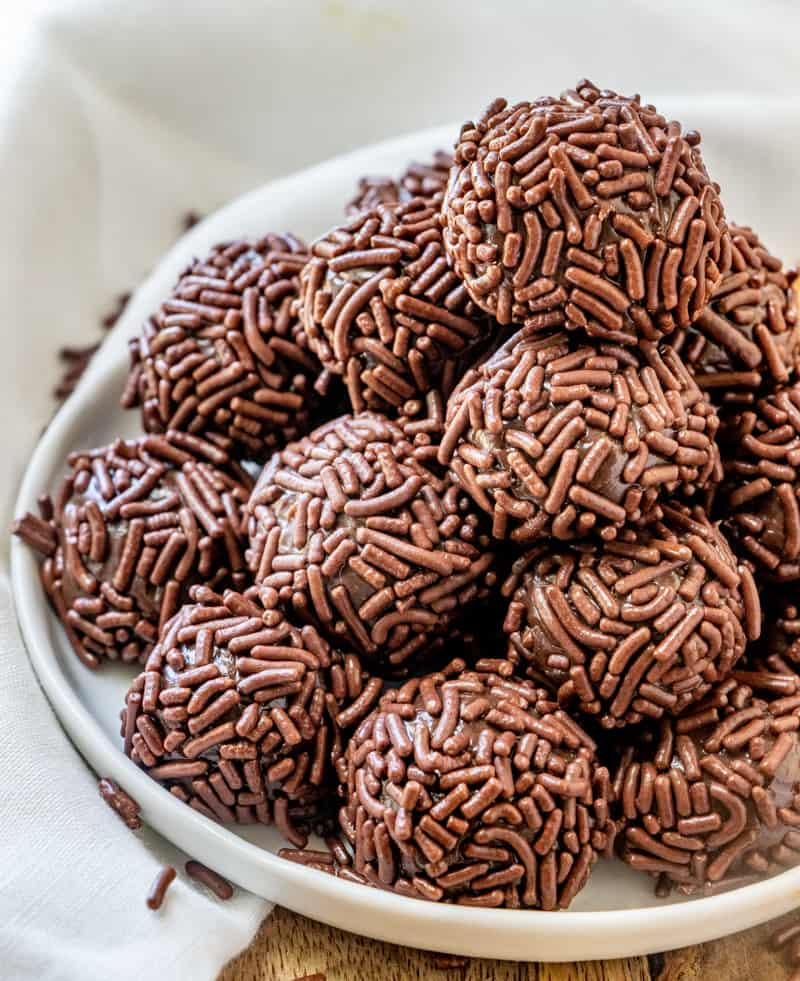

There is a great Brazilian sweet that is like a bonbon and extremely scrumptious and delicious called brigadeiro! This is a great type of sweet that is loved here in Brazil! Try it! You can make it in the microwave too, just remember to stir every minute.
The content of this page is used for educational purposes only. This recipe can be found here. All credits go to the writer of the recipe.
Back to home